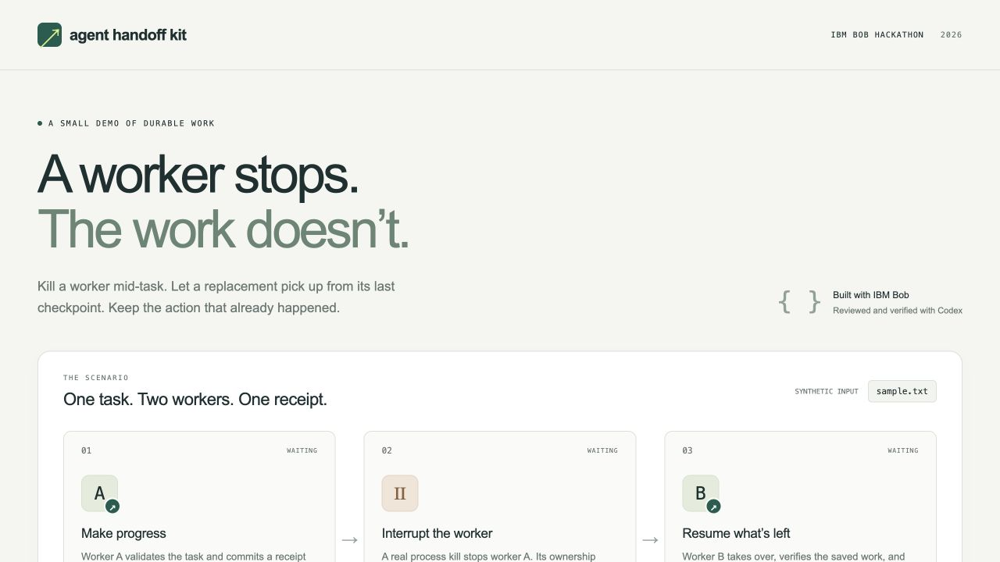

Engineering case study · Recovery prototype
A worker stops.
The work resumes.
Agent Handoff Kit explores a specific problem: how can a replacement worker finish an interrupted local task without creating a second receipt?
Python standard library · SQLite · Real worker processes

The problem
A worker can disappear after committing an effect but before reporting success. Restarting the whole task can repeat that effect. This prototype makes progress durable and checks ownership before allowing another commit.
How the pieces fit
- 1. CheckpointA worker records its receipt, checkpoint and audit history together in one SQLite transaction.
- 2. Take overAfter the owner’s lease expires, a replacement receives a new generation. Generation fencing rejects stale-worker commits.
- 3. VerifyThe replacement finishes the task. Read-only replay checks that the receipt and audit history remain unchanged.
SQLite keeps these local records within one transaction boundary. The system also keeps input immutable. Unknown outcomes or contradictory evidence move to NEEDS_REVIEW, rather than silently resetting the task.
What the demo actually shows
The demo kills worker A after it commits a receipt, waits for lease expiry, and starts worker B. It uses separate processes and a fresh temporary database. The documented expected result is a completed task, one receipt, nine audit events and unchanged replay.
The result card offers downloadable JSON evidence for each run. The repository’s tests cover concurrent claims, abrupt process death around step commits, rollback, stale leases, malformed evidence and uncertain commit acknowledgement.
The boundary matters
One receipt is a guarantee about this local synthetic transaction. It does not establish exactly-once behavior for external APIs, payments or other real-world effects.
Use local disk, not a network filesystem. Clock changes can affect lease timing. Physical disk failure and machine power loss have not been tested. External adapters and reconciliation are not implemented.
How I built it with AI
The project was developed with IBM Bob and Codex. Bob authored the initial implementation and revised its tests; Codex reviewed, corrected and independently verified the core, then authored the web interface and hosting wrapper. The repository preserves that attribution and task evidence.
The public demo runs on an Oracle VM behind a Cloudflare hostname. It is a low-traffic demonstration, not a service for processing visitors’ own tasks. Originally created for the September 2026 IBM Bob hackathon, it was released independently after the submission deadline.
Read the provenance ↗What I’d build next
An external-service adapter would need its own idempotency and reconciliation strategy. The next step is to test that boundary explicitly before extending the local recovery claim to a real integration.